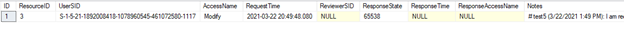
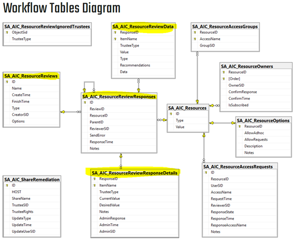

Issue: You need information about the tables that drive the AIC resource review process.
Reference: Stealthbits_SMP_AIC_DC_Schema PDF (Find in internal documentation folder "\\sbitsinc.com\public\Documentation\Schema")
How AIC resource reviews work under the hood
NOTE: This information assumes you already have knowledge of how Access Information Center resource ownership and resource review workflows operate. It discusses the implications of those things and how they interact with the database tables for them.
Creating a resources and assigning owners
Let’s start by looking at the table SA_AIC_Resources (before we add a new resource).
SA_AIC_Resources:
This table simply keeps the list of resources that have had reviews requested.
Resource types are: 0=FileSystemShare, 1=SharePointResource, 2=ActiveDirectoryGroup,
3=ActiveDirectoryDistributionList, 4=LocalGroup, 5=FileSystemExport
Then let’s create a new resource, afterwards looking to see what the same table looks like. I assigned a new owner for \\FS.SPIDER.LAB\TypicalDocuments. Now my Resource Owners page in the AIC looks like this:
Here’s SA_AIC_Resources (after the change… note the new entry with ID 5):

And here is SA_AIC_ResourceOwners:
There is our newly added resource, ID 5 in SA_AIC_Resources. You’ll see it’s not confirmed yet either by the owner in SA_AIC_ResourceOwners.
SIDE NOTE: You might also notice that there is NOT an entry in the AIC for \\SA10TWO.SPIDER.LAB\TypicalDocs, but there IS any entry for that on line 4 of SA_AIC_Resources. What’s going on with that you ask? Resources that have been deleted in and have no owner are still retained in SA_AIC_Resources table. This is so old resource review history can still be viewed for them. (I actually deleted it because the name was the same as the one I was going to add, but on a different server, forgetting it worked this way. So I will just have to trust that you are going to look at the whole UNC and not get confused.)
Once the owner confirms that they do own the resource, SA_AIC_ResourceOwners is updated.
(If for some reason the owner confirmation was that they did NOT own the resource, “ConfirmResponse” would be set to 0 but ConfirmTime would still be set. You’d still see the resource on the resource owners, list it just would say it was NOT confirmed with a red X under the confirmed column in the AIC.)
We will also see that SA_AIC_ResourceOptions lets us know if the resource allows adhoc permissions changes by the owner, or self-service access requests by users, plus the description field. (In our case no resources allow either of those, hence the 0 for all resources in both AllowAdHoc and AllowRequests.)
If you use the “edit notes” option for the resource, you can add a note.
This also shows in the interface with a visual indicator when there is a note.
Now we know what happens when a new resource is created and the owner confirmed, and the tables associated with those actions.
Additionally, there is a view with additional details about the resource owners - SA_AIC_ResourceOwnersView. Here is an example:
Access Requests
To set up for the next section, I made 3 groups, gave them read/modify/full_control, rescanned FSAA and ADI. Then I could edit a resource to enable the options to allow AdHoc permissions changes by the resource owners and allow access requests from users.
Here is SA_AIC_Resource_options after that change. Note ID 3 which corresponds to the resource we changed.
We also see an update to SA_AIC_ResourceAccessGroups.
Now that users can request access, let’s submit a request. Previously SA_AIC_ResourceAccessRequests was blank, but after submitting an access request we can see that entry.

When the owner approves the request, we will see that same table be updated again.
If the AIC is NOT set up to automate the changes, the approval record will still be in the table! It just won’t actually be in effect until whatever manual process is required to move the user into the right group happens.
If you DO have the AIC set up to allow the AIC itself to automate changes, and the owner has permission to make ad-hoc changes to a user’s access on a resource, the owner will also have the “change access” button available when they select a resource from the Manage My Resources (Resource Ownership) page.
(If AIC is not set to automate the changes in Configure Console, then this button will not be available. )
If a user’s access is changed with this method, it will also also show up in the SA_AIC_ResourceAccessRequests table.
We have seen the tables related to Access Requests and how they change during the request (or access change) process.
(Note that these examples show tables are from V10 StealthAUDIT. V11 has additional fields in some of the tables, but the basic concepts are the same.)
Resource Reviews
Now that we have covered the basics, we will delve into the complexities of Resource Reviews. Although there are more tables, we will look at how they are connected and what they store.
[I have deleted all resource reviews from my test machine before starting so all the resourcereview tables are empty.]
Create Review
First we will create a resource review. I created an access review for one of my resources as an example, and named it “access review 1”.
Let’s see how the resource review tables and view look after doing that.
SA_AIC_ResourceReviews:
This table simply shows the name, type, create time, and creator for the review.
Type 0 happens to be an access review. You can find the access types in Appendix D of the
AIC schema documentation, but for clarity I will list them here as well. Review types:
0=access, 1=permissions, 2=membership, 3=sensitive data, 4=file review.
SA_AIC_ResourceReviewResponses:
This table is indicating who did the review AND allowing us to associate the ID of the
review itself to the individual responses. (Reponses will reference ID 19, but the review
itself is ID 8. These are two separate lists of things.) This table also shows us the
ResourceID, which refers to the ID of the resource as listed in SA_AIC_Resources (see info
about that table above in Resource Owners section).
Be aware that there is also a related view called SA_AIC_ResourceReviewResponsesView. This is simply a view that gives us more info joined to the info in SA_AIC_ResourceReviewResponses, to make it more useful for humans when viewing the info. (We won’t look at the view unless there is something specific to call out in the rest of this discussion, but be aware it exists and can provide you extra contextual information.)
SA_AIC_ResourceReviewData:
This table shows all the data about all trustees with access. (This is the
purpose of the review…to show and let someone flag/comment on each trustee.) You can see
that each row has the “responseID” set to 19. This is telling us each of those entries
belongs to the review with the ID 19 in SA_AIC_ResourceReviewResponses. In turn, the
“reviewID” column in that table points us back to the actual review it with ID 8
in the table SA_AIC_ResourceReviews.
SA_AIC_ResourceReviewResponseDetails and SA_AIC_ResourceReviewResponseDetailsView:
Both empty for now, but when someone reviews that data these will be populated.
Begin Review
Lets log into the AIC as the owner of the resource with the review, and see what it looks like there. When we click “Begin Review”, we see the list of trustees and their current permissions. These correspond directly to the items in SA_AIC_ResourceReviewData. Even though we don’t know the SIDs from that table, we can see there are three trustees with read access and three with full control. (In this case each item is in the same order, but this is not guaranteed when selecting from the table.)
One item to note is the recommendation for one trustee that says “None: No domain login for 60 days”. This is auto-populated for us based on the trustee not having logged in to the domain for a long time.
Recommend Change
If we make a change, we can observe the results in the associate tables.
After changing the Authenticated Users trustee to recommend modify permissions and
clicking SAVE (without clicking next to finish the review), we will see an addition to the
following tables/views:
SA_AIC_ResourceReviewResponseDetails:
You can see that SA_AIC_ResourceReviewResponseDetails is recording our suggested permissions change in the DesiredValue column. The ResponseID, ItemName, and TrusteeType are used to associate this response back to the item with the same values in the table SA_AIC_ResourceReviewData (which contains the initial values info).
Be aware there is a related view named SA_AIC_ResourceReviewResponseDetailsView, which simply gives more info about the items in SA_AIC_ResourceReviewResponseDetails. (We won’t look at the view unless there is something specific to call out in the rest of this discussion, but be aware it exists and can provide you extra contextual information.)
Submit Changes
If we click NEXT in the resource review, we will then be allowed to enter any notes about our recommended changes. I will enter one we can see for our one suggested change, and then hit Submit.
We will see that SA_AIC_ResourceReviewResponseDetails now has our Note for that user:
SA_AIC_ResourceReviewResponses also has been updated with the review info, now that the review has been completed and submitted:
Approve/Deny Changes
The review now goes back to the original requestor, who will look at the recommendations made and approve or deny the individual responses. In this case, I will accept our change on the individual trustee. This updates the table SA_AIC_ResourceReviewResponseDetails with the AdminResponse (0=accept, 1=decline, 2=defer), as well as the AdminTime and AdminSID columns.
SIDE NOTE: This document does not discuss the “process changes” option. Maybe it just bulk agrees or denies the suggested changes?
Finish Review
If the review requestor then returns to the Manage Reviews screen, they will have the ability to use the “Mark Completed” button to finalize the review process. When they do, SA_AIC_ResourceReviews will be updated with the FinishTime.
Run Again
If the ‘Run Again’ button is chosen for a completed review, a new copy of it (with a new ID) is created in SA_AIC_ResourceReviews, and the entire process begins again for that new review.

Conclusion + Review process steps
This was a basic walkthrough of how the various tables are used to keep track of items in the Resource Owners and Resource Reviews portion of the AIC. In a real environment, there would likely be more trustees and perhaps different recommendations for each, but they would just be recorded in the appropriate tables.
I hope this walkthrough was useful to you. Here is an overview of the steps in the review process that make changes to the various review tables.
|
CREATE REVIEW [Requestor] |
Adds entries to SA_AIC_ResourceReviews, SA_AIC_ResourceReviewResponses, and SA_AIC_ResourceReviewData |
|
RECOMMEND CHANGES + ADD NOTES [Reviewer] |
Updates values in SA_AIC_ResourceReviewResponseDetails |
|
SUBMIT CHANGES [Reviewer] |
Updates value in SA_AIC_ResourceReviewResponses |
|
APPROVE/DENY CHANGES [Requestor] |
Updates values in SA_AIC_ResourceReviewResponseDetails |
|
FINISH REVIEW [Requestor] |
Updates value in SA_AIC_ResourceReviews |
Channel: Internal
Submitted by: Robert Parsons
Product: Access Information Center (AIC)
Affected Versions: all, but written with info from version 10
Affected Module: Access Information Center (resource reviews)
Dev Ticket: N/A
Resolved In Version: N/A
KB Type: How to